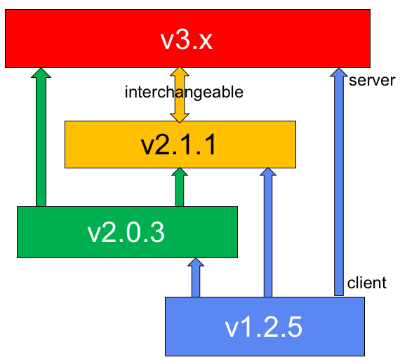

9. Version Numbers and Binary Compatibility
OpenPMIx has two sets of version numbers that are likely of interest to end users / system administrator:
Software version number
Shared library version numbers
Both are described below, followed by a discussion of application binary interface (ABI) compatibility implications.
9.1. Software Version Number
OpenPMIx’s version numbers are the union of several different values: major, minor, release, and an optional quantifier.
Major: The major number is the first integer in the version string (e.g., v1.2.3). Changes in the major number typically indicate a significant change in the code base and/or end-user functionality. The major number is always included in the version number.
Minor: The minor number is the second integer in the version string (e.g., v1.2.3). Changes in the minor number typically indicate a incremental change in the code base and/or end-user functionality. The minor number is always included in the version number:
Release: The release number is the third integer in the version string (e.g., v1.2.3). Changes in the release number typically indicate a bug fix in the code base and/or end-user functionality.
Quantifier: OpenPMIx version numbers sometimes have an arbitrary string affixed to the end of the version number. Common strings include:
aX: Indicates an alpha release. X is an integer indicating the number of the alpha release (e.g., v1.2.3a5 indicates the 5th alpha release of version 1.2.3).bX: Indicates a beta release. X is an integer indicating the number of the beta release (e.g., v1.2.3b3 indicates the 3rd beta release of version 1.2.3).rcX: Indicates a release candidate. X is an integer indicating the number of the release candidate (e.g., v1.2.3rc4 indicates the 4th release candidate of version 1.2.3).
Although the major, minor, and release values (and optional quantifiers) are reported in OpenPMIx nightly snapshot tarballs, the filenames of these snapshot tarballs follow a slightly different convention.
Specifically, the snapshot tarball filename contains three distinct values:
Most recent Git tag name on the branch from which the tarball was created.
An integer indicating how many Git commits have occurred since that Git tag.
The Git hash of the tip of the branch.
For example, a snapshot tarball filename of
pmix-v1.0.2-57-gb9f1fd9.tar.bz2 indicates that this tarball was
created from the v1.0 branch, 57 Git commits after the v1.0.2 tag,
specifically at Git hash gb9f1fd9.
OpenPMIx’s Git master branch contains a single dev tag. For example,
pmix-dev-8-gf21c349.tar.bz2 represents a snapshot tarball created
from the master branch, 8 Git commits after the “dev” tag,
specifically at Git hash gf21c349.
The exact value of the “number of Git commits past a tag” integer is fairly meaningless; its sole purpose is to provide an easy, human-recognizable ordering for snapshot tarballs.
9.3. Application Binary Interface (ABI) Compatibility
OpenPMIx provides forward ABI compatibility in all versions of a given
feature release series and its corresponding
super stable series. For example, on a single platform, a PMIx
application linked against OpenPMIx v1.3.2 shared libraries can be
updated to point to the shared libraries in any successive v1.3.x or
v1.4 release and still work properly (e.g., via the LD_LIBRARY_PATH
environment variable or other operating system mechanism).
OpenPMIx reserves the right to break ABI compatibility at new feature release series. For example, the same PMIx application from above (linked against PMIx v1.3.2 shared libraries) will not work with PMIx v1.5 shared libraries.
9.4. Cross-Version Compatibility
As PMIx adoption has grown, the problem of managing application-SMS interactions between different PMIx library versions has increased in visibility. It soon became clear that use of a common library version by both SMS and application could not be guaranteed, especially in the container-based application use-case. Thus, cross-version compatibility arose as a problem.
PMIx has addressed this by utilizing a plugin-based architecture that allows both the client and server to select from a range of supported protocol levels. The resulting coordination is based on a client-driven handshake – i.e., the client selects the protocol to be used, and the server adapts to support it. The client’s selection is based on a combination of environmental parameters passed to it at launch by the server, filtered against the protocols available to that particular client. For example, a PMIx v1.2 client only has the usock messaging transport available to it, and so would select that transport even when a PMIx v3 server offered usock and tcp options. Note that if the PMIx v3 server had not been instructed to support usock, then the v1.2 client would have failed PMIx_Init with an error indicating the server was unreachable.
Although the PMIx community is committed to supporting the cross-version use-case, early releases did not fully provide the necessary capabilities. Each release branch has since been updated to include the required translation logic for communicating to other versions, but full compatibility could not be provided due to the level of changes it would introduce to what would otherwise be considered a stable release series. Thus, the following chart shows the available compatibility:

Starting with v2.1.1, all versions are fully cross-compatible – i.e., the client and server versions can be any combination of release level. Thus, a v2.1.1 client can connect to a v3.0.0 server, and vice versa.
PMIx v1.2.5 servers can only serve v1.2.x clients, but v1.2.5 clients can connect to v2.0.3, and v2.1.1 or higher servers. Similarly, v2.0.3 servers can only serve v2.0.x and v1.2.5 clients, but v2.0.3 clients can connect to v2.1.1 or higher servers.
Note
The cross-version guarantee only means that users of two different versions will be able to communicate requests and their responses. It does not guarantee that both sides will completely support the requests. It is possible, for example, for a server to not include support for an operation that was introduced in a newer version being used by a client. Likewise, it is possible that a bug existed in an earlier version that precludes correct completion of the request.